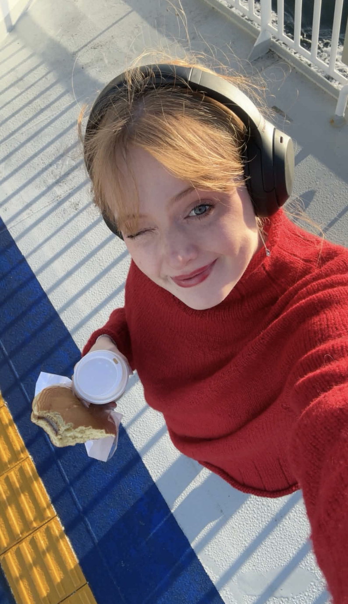

Othilie Rugaard Langholm
Master student in cyber security, with focus on post quantum cryptography and AI
Hello there!
My name is Othilie. I am a master student in cyber security, currently writing a thesis in the field of Post Quantum Cryptography (PQC).
I started in this field after a newfound love for coding and a slight paranoia.
The field of cyber security is ever changing, so there is always something new to learn.
Aside from studies, i have been active in the student community. From 2023-2026 i have been the leader of the student organization HeltSikker,
making Capture-The-Flag competitions, arranging speaker events and security evenings.
I have also been a bit on the stage myself as a speaker at Otocon, talking about security on social media.
I really enjoy participating in the security community, learning more and challenging my views.
 Outside of being a student, I work as IT-support at the University of Bergen, stumbling through cables and looking at different software.
Through my work i have gotten used to looking at and getting to know completely new programs.
When I have a breather away fom the screen, You would either find me doing some crafts, on a hike or with my nose buried deep in a good book. A book i can really recommend
is "Ekko: et essay om algoritmer og begjær" by Lena Lindgren.
Feel free to reach out on my LinkedIn if there are any questions!
Outside of being a student, I work as IT-support at the University of Bergen, stumbling through cables and looking at different software.
Through my work i have gotten used to looking at and getting to know completely new programs.
When I have a breather away fom the screen, You would either find me doing some crafts, on a hike or with my nose buried deep in a good book. A book i can really recommend
is "Ekko: et essay om algoritmer og begjær" by Lena Lindgren.
Feel free to reach out on my LinkedIn if there are any questions!
Education
MSc. Secure and Reliable Communications, University of Bergen (2025-2027)
BSc. Informatics: Cyber Security, University of Bergen (2022-2025)
BS in Japanese, University of Bergen (2018-2022)
Exchange Program, Business and Culture, Keio University, Tokyo (2021-2022)
General Studies, Science track, Amalie Skram VGS (2015-2018)